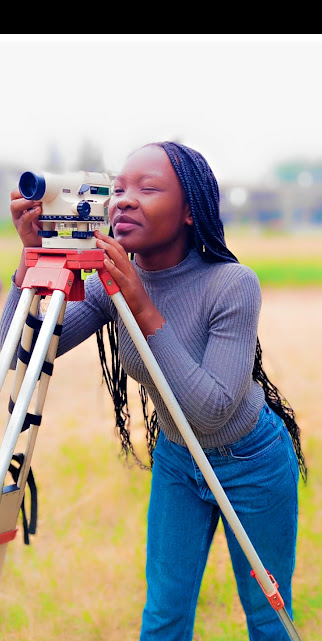

Professional Experience
Studying Geospatial Engineering has been an enlightening experience, offering insights into solving everyday challenges. Over three years, I've delved into Geoinformation Systems (GIS), becoming proficient in GIS tools like ArcMap and QGIS for customized map creation. Additionally, my grasp of cartography enables manual map design. Proficiency in AutoCAD allows me to handle various tasks comfortably. I've gained understanding in Remote Sensing and Geospatial Surface Modeling, along with basic knowledge in Java and Python programming languages. Throughout my academic journey, I've developed a deep appreciation for photogrammetry, continually enhancing my skills and understanding.

Leadership Experience
Throughout my primary school, I consistently held leadership roles, being appointed as deputy school head girl and eventually becoming the head girl, experiences that instilled confidence in me. At The Kenya High School, my leadership further honed my interpersonal skills. Transitioning to The University of Nairobi,I continued my leadership journey, assuming the role of class representative from my first year, bridging the gap between the department, faculty, and students. Additionally, I undertake responsibilities as a student custodian,overseeing student welfare. These roles have enabled me to gain valuable insights into managing diverse personalities and backgrounds. Throughout, my commitment to leadership and fostering a supportive environment remains steadfast.
Part-Time Freelancing Experience
With expertise in academic writing, my specialization lies in business and finance topics. Serving clients globally, from Canada, the United Kingdom, the United States, to Australia, I've honed my skills in online ethics, collaboration, and teamwork while expanding my people skills. Juggling academic writing alongside studies has fortified my time management abilities, thanks to online platforms facilitating this dual role. This journey has also refined my writing and presentation skills, ensuring efficient delivery of high-quality work to clients worldwide.